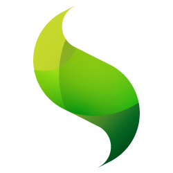

Sencha Touch
Building an HTML5 Mobile App.
What is it?
Sencha Touch 2 is the only framework that enables developers to build fast and impressive apps that work on iOS, Android, BlackBerry, Kindle Fire, and more.
Things that make it awesome
- Charting API
- Event driven
- MVC(S)
- Easily themeable via SASS
- Easy to compile for iOS or Android store
- Free!
Things you need to develop
- Modern webkit browser like Safari or Chrome
- A webserver running locally

Let's look at app.js
Ext.application({
name: 'PDC',
views: [
'Main',
],
models: [],
controllers: [],
stores: [],
launch: function(){
Ext.Viewport.add({
xclass: 'PDC.view.Main'
});
}
});
But where is 'Main' located?
Main.js is located in app/view/Main.js
How each class is setup
Inside each of the MVC files, there is a standard way you setup your classes.
Ext.define();
Ext.define()
Ext.define('[AppNamespace].[folder].[FileName]', { gigantic config object });
Contents of Main.js
Ext.define('PDC.view.Main', {
extend: 'Ext.tab.Panel',
xtype: 'main',
config: {
tabBar: {
flex: 1,
docked: 'bottom'
},
items: [
{
xtype: 'sessions',
title: 'Sessions',
iconCls: 'time'
}
]
}
});
extend
extend: 'Ext.tab.Panel'Extending the parent class
xtype
xtype: 'main'An alias for the component we're defining. The format for this is typically lowercase letters only. Example 'sessiondetails'.
Used for referencing components easily and lazily loading them.
config
config: { ... }Allows you to add specific items and set configuration to build your view.
A config object is standard across all components. You will see this everywhere!
Look at http://docs.sencha.com/touch/2-0/ for an overview of what config options can be passed to that specific component (Ext.tab.Panel).
config: { tabBar: ... }
config: {
tabBar: {
flex: 1,
docked: 'bottom'
}
}This tabBar option is specific to the Ext.tab.Panel component and has its own set of options.
tabBar set to docked: 'bottom'
tabBar set to docked: 'top'

config: { tabBar: { flex: 1 } }
Setting flex: 1 means it will stretch the buttons out over the width of the screen. If it wasn't, they would all bunch together.
config: { items: [] }
Items in a way of adding other components within the viewport of the current component.